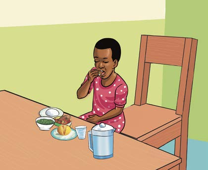
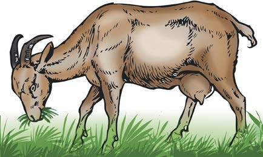

Characteristics of living things
There are seven main characteristics of living things. These characteristics are nutrition, respiration, sensitivity, movement, reproduction, excretion and growth.
Nutrition
All living things need food. Refer to Figure 2 and its description. Food provides the body of living things with nutrients needed for their growth and development. The important nutrients include proteins, carbohydrates, fats, minerals and vitamins. The nutrients are important for growth, energy and body repair. Also, nutrients help to protect the body against diseases. Plants make their own food in the green leaves using the carbon dioxide gas and water in the presence of light.

(a)

(b)
Figure 2: Living things feeding